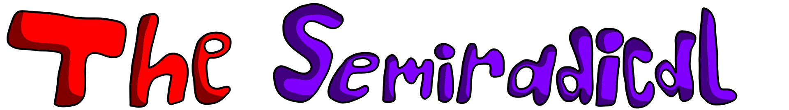
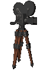
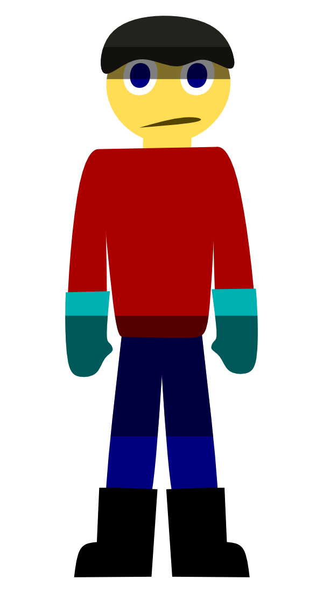
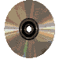
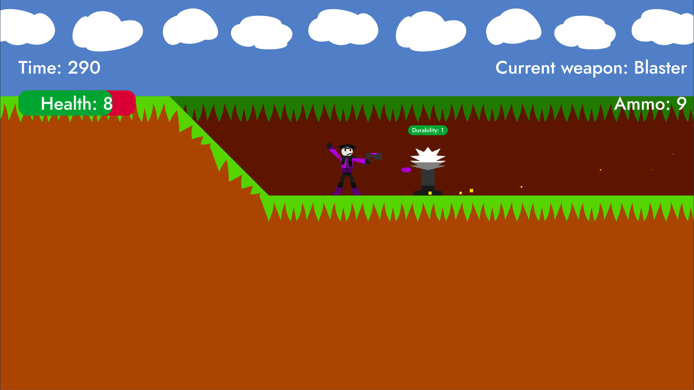
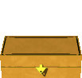

The Semiradical – это игра, над которой я планирую работать после того, как закончу остальные проекты. Это будет масштабным проектом.
Также, я планирую улучшать эту страницу и добавить больше информации. Рисунки на этой странице не являются тем, чем должен быть визуальный стиль игры.
Скоростной 2D-платформер
Вы играете за Яромира и ваша цель – победить Зиновия. Вы встретите его роботов, что являются врагами. Также, вы встретите некоторых больших роботов, что являются боссами.
В финале, вы сразитесь с самим Зиновием.
Зиновий собирается захватить мир. Кроме этого, он ещё и собирается взять в рабство всю расу лектрейдо.
Однако, один из них, Яромир, очень зол из-за этого. Он решает рисковать ради свободы.
Действия игры происходят в Беларуси в первой четверти XXI века.
Обе игры имеют Яромира в качестве главного героя, имеют продвинутых членистоногих и другие общие особенности. Это всё потому, что ALTRADICAL основан на The Semiradical. Несмотря на это, ALTRADICAL не является каноном.

Рисковый 20-летний лектрейдо со способностью бежать на сумасшедших скоростях, которая была с рождения.
Он создал своё собственное оружие для приключения: меч и бластер.

Я не могу сказать о нём многое. Просто какой-то безумный человек-учёный, который хочет захватить мир. Он испортил улицы своими роботами и прочим "мусором". Все боятся его кроме продвинутых членистоногих и Яромира.


Дата создания: 6 июля 2025 (текущая версия), 28 июня 2025 (оригинал)
Описание: Это лучший трек, который я когда-либо делал. Я говорю как и про текущую, так и про старую версию.

Задумка появилась давно, в 2022 году. Она была про игру мечты. Изначальное название игры было "Project: Wetdarum", действия игры изначально происходили на вымышленной планете Ветдарум. Целевая визуальная стилистика игры – рисованная, но изначально это был 16-битный пиксель-арт.
Игра будет использовать собственный движок, вероятно написанный на языке Си с библиотекой raylib вместо готовых движков.
{kind=link}
{kind=link}